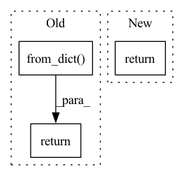

Pattern ID :14548
Before Change
break
if not has_annotations:
return datasets.Dataset.from_dict( {})
class_tags = ["O"]
class_tags.extend(
[After Change
raise ValueError(
"Please provide a spacy language model to prepare the dataset for training with the spacy framework."
)
return self._prepare_for_training_with_spacy(nlp=lang)
@_requires_datasets
def _prepare_for_training_with_transformers(self):In pattern: SUPERPATTERN
Frequency: 3
Non-data size: 3
Instances Fragment ID: 47902962
Project Name: recognai/rubrix
Commit Name: 85878087144723695568ebde0d04e16fc9de3c1c
Time: 2022-08-22
Author: francisco@recogn.ai
File Name: src/rubrix/client/datasets.py
M Class Name: DatasetForTokenClassification
N Class Name: DatasetForTokenClassification
M Method Name: prepare_for_training(3)
N Method Name: prepare_for_training(1)
M Parent Class: DatasetBase
N Parent Class: DatasetBase
M File Name: src/rubrix/client/datasets.py
N File Name: src/rubrix/client/datasets.py
M Start Line: 766
M End Line: 842
N Start Line: 793
N End Line: 854
Before Change
for r in response.parsed:
for item, value in r.items():
data[item].append(value)
return datasets.Dataset.from_dict( data)
def snapshots(self, dataset: str) -> List[models.DatasetSnapshot]:
Retrieves created snapshots for given datasetAfter Change
response = _get_dataset_data.sync_detailed(client=self._client, name=name)
_check_response_errors(response)
return pandas.DataFrame(response.parsed)
def snapshots(self, dataset: str) -> List[models.DatasetSnapshot]:
Fragment ID: 47902963
Project Name: recognai/rubrix
Commit Name: 74174ca1233b1d405c6e720b9126e4f5e246ba22
Time: 2021-04-07
Author: francisco@recogn.ai
File Name: src/rubrix/client/__init__.py
M Class Name: RubrixClient
N Class Name: RubrixClient
M Method Name: load(4)
N Method Name: load(4)
M Parent Class:
N Parent Class:
M File Name: src/rubrix/client/__init__.py
N File Name: src/rubrix/client/__init__.py
M Start Line: 210
M End Line: 214
N Start Line: 209
N End Line: 209
Before Change
hits = next(self.losses_iter)
dummy_1 = {side: {rank_type: 10.0 for rank_type in RANK_TYPES} for side in SIDES}
dummy_2 = {side: {rank_type: 1.0 for rank_type in RANK_TYPES} for side in SIDES}
return RankBasedMetricResults.from_dict(
arithmetic_mean_rank=dummy_1,
geometric_mean_rank=dummy_1,
harmonic_mean_rank=dummy_1,
median_rank=dummy_1,
inverse_arithmetic_mean_rank=dummy_2,
inverse_harmonic_mean_rank=dummy_2,
inverse_geometric_mean_rank=dummy_2,
inverse_median_rank=dummy_2,
adjusted_arithmetic_mean_rank=dummy_2,
adjusted_arithmetic_mean_rank_index={
side: {
RANK_REALISTIC: 0.0,
}
for side in SIDES
},
rank_count={side: {rank_type: 1 for rank_type in RANK_TYPES} for side in SIDES},
rank_std=dummy_1,
rank_var=dummy_1,
rank_mad=dummy_1,
hits_at_k={
side: {
rank_type: {
10: hits,
}
for rank_type in RANK_TYPES
}
for side in SIDES
},
)
def __repr__(self): // noqa: D105
return f"{self.__class__.__name__}(losses={self.losses})"
After Change
if self.key not in result.data:
raise KeyError(self.key)
result.data[self.key] = next(self.values_iter)
return result
def __repr__(self): // noqa: D105
return f"{self.__class__.__name__}(values={self.values})" Fragment ID: 47902961
Project Name: pykeen/pykeen
Commit Name: 71f0a0d92c997b17c6c171281ea7ffd0e46cc408
Time: 2022-03-04
Author: berrendorf@dbs.ifi.lmu.de
File Name: tests/mocks.py
M Class Name: MockEvaluator
N Class Name: MockEvaluator
M Method Name: finalize(1)
N Method Name: finalize(1)
M Parent Class: Evaluator
N Parent Class: Evaluator
M File Name: tests/mocks.py
N File Name: tests/mocks.py
M Start Line: 51
M End Line: 82
N Start Line: 62
N End Line: 67